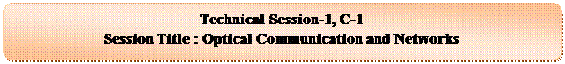
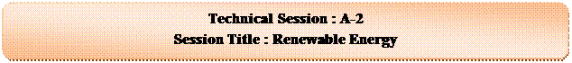
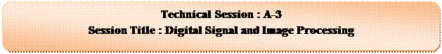
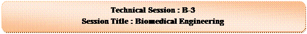

Venue: Room No : 402, Tower Building - I Time : 08:30 - 10:30am
Session Chair : Prof. Pran Kanai Saha, Dept. of EEE, BUET
Venue: Room No : 404, Tower Building - I Time : 08:30 - 10:30am
Session Chair : Dr. Anisul Haque, Dept. of EEE, EWU

Venue: Room No : 201, Tower Building - I Time : 08:30 - 10:30am
Session Chair : Prof. Md. Saiful Islam, IICT, BUET
|
Ser No |
Paper ID |
Title of the paper |
|
1 |
148 |
|
|
2 |
173 |
|
|
3 |
174 |
|
|
4 |
212 |
Improvement of BER Performance in DS-OCDMA System using Chirped Pulses under GVD Regime |
|
5 |
235 |
|
|
6 |
236 |
|
|
7 |
243 |
Effect of Four Wave Mixing Nonlinearity in Wavelength Division Multiplexing Radio over Fiber |
Venue: Multipurpose Hall, Tower Building – I (10th floor) Time : 10:45 - 12:45 pm
Session Chair : Capt M Mahbubur Rahman, Dept of EECE, MIST
|
Keynote Session |
Name of Keynote Speaker |
Topic |
|
Plenary Talk-3 |
Prof. Siddique-e Rabbani |
Indigenous Development of Electro-Medical Devices at Dhaka University |
|
Plenary Talk-4 |
Prof. Ranjan Gangopadhyay |
DWDM Optical Network |
Venue: Tower Building – I (2nd floor, 4th floor) Time : 03:00 - 04:30 pm

Venue: Room No : 402, Tower Building - I Time : 02:30 - 04:30pm
Session Chair : Dr. Md. Nurunnabi Mollah, Dept. of EEE, KUET
|
Ser No |
Paper ID |
Title of the paper |
|
1 |
170 |
|
|
2 |
176 |
Hydro-PV-Wind-Battery-Diesel Based Stand-Alone Hybrid Power System |
|
3 |
201 |
|
|
4 |
274 |
|
|
5 |
344 |
Tidal Energy: A Solution to Energy Crisis in Coastal Area of Bangladesh |
|
6 |
357 |
|
|
7 |
360 |
|
|
8 |
378 |
Modeling and Performance Analysis of Germanium Based p-i-n Solar Cells |
|
9 |
411 |
Challenges and Prospects of Cost-Effective Si-based Solar Cells Fabrication in Bangladesh |
Venue: Room No : 404, Tower Building - I Time : 02:30 - 04:30pm
Session Chair : Prof. M A Matin, Dept. of EEE, BUET
Venue: Room No : 201, Tower Building - I Time : 02:30 - 04:30pm
Session Chair : Prof. Mohammad Mahfuzul Islam, Dept. of CSE, BUET

Venue: Room No : 402, Tower Building - I Time : 04:45 - 06:45pm
Session Chair : Prof. Saidur Rahman, Dept. of CSE, MIST

Venue: Room No : 404, Tower Building - I Time : 04:45 - 06:45pm
Session Chair : Prof. Subrata Kumar Aditya, Dept. of APECE, DU
Venue: Room No : 201, Tower Building - I Time : 04:45 - 06:45pm
Session Chair : Gp Capt Md Afzal Hossain, Dept. of CSE, MIST